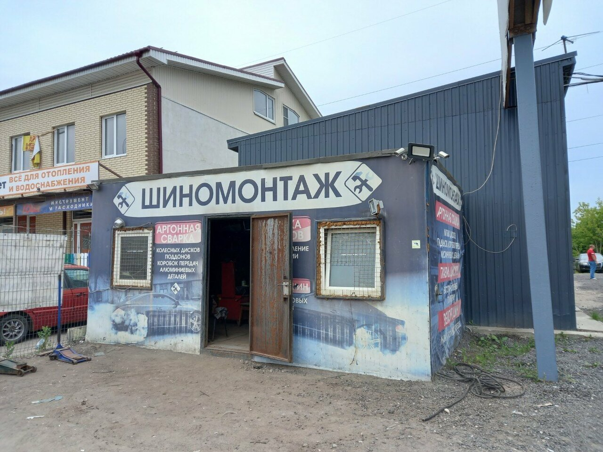

Шиномонтаж · Афонино
ПРАКТИК
Шиномонтаж на Казанском шоссе.
Каждый день с 10:00 до 19:00.

Мастерская
Услуги
Погнули диск или нужна помощь на дороге? Позвоните, чтобы обсудить ремонт или договориться о выезде.
Шиномонтаж
Выездной шиномонтаж
Правка дисков
Аргонная сварка дисков и алюминиевых деталей
Фото мастерской
Отзывы водителей
4,4
из 5
16 оценок
«Ребята молодцы, без лишних разговоров.»
«Профессиональный аппарат, быстро и качественно заправили кондиционер.»
Контакты
Как нас найти
Ближайшие остановки
- Сады
- 169 м
- Красная Поляна
- 480 м
- Верхние Печёры
- 710 м
- Академическая
- 750 м
- Улица Богдановича
- 880 м